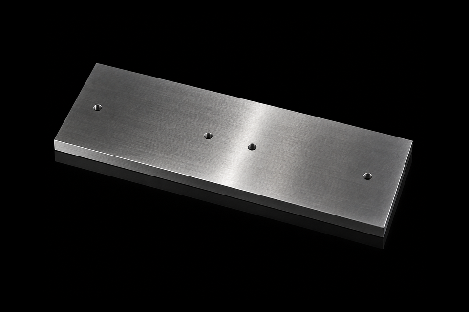

PVD Coating Materials / Sputtering Targets
Gadolinium Metal Target
金属钆靶
Specifications
| Product Name | Gadolinium Metal Target |
|---|---|
| Chinese Name | 金属钆靶 |
| Product Line | PVD Coating Materials |
| Category | Sputtering Targets |
| Formula / Composition | Gd |
| Purity | Gd/TREM:99.9%~99.99% |
| Standard Size | Round Target Dia < 350mm; Rectangular Target Width < 240mm; Rectangular Target Length < 550mm; Tube Target OD < 300mm |
| Packaging | 真空包装 |
| Customization | 是 |
Product Features
圆形，方形或旋转靶，可绑定
원형, 정사각형 또는 회전 대상, 바인딩 가능
Applications
半导体与自旋存储的MRAM磁随机存储器多层磁性薄膜，高k介质/栅极钝化层，磁传感元器件薄膜。平板显示IGZO氧化物TFT掺杂层，OLED水氧阻隔封装膜，发光与光学辅助镀膜。也可制备红外光学镀膜、中子屏蔽防护层、磁制冷功能膜，同时用于固态能源器件、自旋电子与前沿材料科研镀膜。
Used for multilayer magnetic films in MRAM spin storage, high-k dielectric and gate passivation layers, and thin films for magnetic sensing components. It is also applied in IGZO oxide TFT dopant layers for flat-panel displays, OLED water-oxygen barrier encapsulation films, luminescent and optical auxiliary coatings, infrared optical coatings, neutron-shielding layers, magnetic refrigeration functional films, solid-state energy devices, spintronics, and advanced materials research.
MRAM 스핀 스토리지의 다층 자성 필름, high-k 유전체 및 게이트 패시베이션 층, 자기 감지 구성 요소용 박막에 사용됩니다. 또한 평면 디스플레이용 IGZO 산화물 TFT 도펀트 층, OLED 물-산소 장벽 캡슐화 필름, 발광 및 광학 보조 코팅, 적외선 광학 코팅, 중성자 차폐층, 자기 냉동 기능 필름, 고체 에너지 장치, 스핀트로닉스 및 첨단 재료 연구에도 적용됩니다.
RFQ Checklist